Laporan Praktikum Aplikasi Mobile: HTTP Request dan Integrasi API pada Aplikasi ResepKu
1. Pendahuluan
Praktikum kedelapan Aplikasi Mobile ini membahas HTTP request dan integrasi REST API pada aplikasi ResepKu. Sebelumnya seluruh resep ditulis langsung di dalam kode sebagai data dummy, sehingga isinya terbatas dan tidak dapat berubah tanpa mengubah kode. Pada praktikum ini data dummy dihapus, dan seluruh resep diambil dari server https://dummyjson.com/recipes menggunakan package http.
Data yang diterima dari server berbentuk teks JSON, sehingga perlu diubah menjadi objek Dart melalui factory Recipe.fromJson. Proses pengambilan data berjalan secara asynchronous menggunakan Future dan async/await, lalu hasilnya ditampilkan dengan FutureBuilder yang menangani tiga kondisi, yaitu loading selama data diambil, error ketika request gagal, dan data ketika request berhasil. Seluruh komunikasi dengan server dikumpulkan dalam satu class RecipeService agar widget tidak memanggil http secara langsung. Selain mengambil data dengan request GET, aplikasi juga dapat mengirim resep baru ke server dengan request POST melalui sebuah form.
Tujuan Praktikum:
- Mahasiswa mampu membaca struktur respons JSON dari REST API dan membuat factory fromJson untuk model Recipe.
- Mahasiswa mampu melakukan request GET dengan package http di dalam sebuah class service.
- Mahasiswa mampu menampilkan data dengan FutureBuilder lengkap dengan loading state, error state, tombol coba lagi, dan pull-to-refresh.
- Mahasiswa mampu mengirim data baru dengan request POST dari sebuah form, lalu menangani hasilnya.
2. Langkah Kerja
Bagian A: Mengenal API dan Model fromJson
A.1 Membaca Respons API di Browser
https://dummyjson.com/recipes?limit=2URL tersebut dibuka di browser untuk melihat bentuk data yang dikirim server. Respons berupa satu objek JSON yang memiliki key recipes berisi array, ditambah key total, skip, dan limit. Setiap elemen pada array recipes merupakan satu resep. Hasil pengamatan dicatat pada tabel berikut.
| Pertanyaan | Jawaban |
|---|---|
| Nilai total | 50 |
| Key yang berisi daftar resep | recipes |
| Tipe nilai rating pada resep pertama (int atau double?) | double (4.6) |
| Tiga key resep yang belum ada di model Recipe | instructions, tags, dan mealType (selain itu juga userId dan reviewCount) |
Nilai total menunjukkan jumlah seluruh resep yang tersedia di server, sedangkan limit membatasi jumlah resep yang dikirim dalam satu respons. Karena daftar resep berada di dalam key recipes, kode aplikasi perlu mengambil isi key tersebut terlebih dahulu sebelum mengubah setiap elemennya menjadi objek Recipe.
A.2 Memasang Package http
flutter pub add httpPerintah ini menambahkan package http ke bagian dependencies di pubspec.yaml sekaligus mengunduhnya, sehingga aplikasi dapat mengirim request GET, POST, PUT, dan DELETE ke server.
A.3 Model Recipe dengan fromJson
class Recipe {
final int id;
final String name;
final String cuisine;
final String difficulty;
final int prepTimeMinutes;
final int cookTimeMinutes;
final int servings;
final int caloriesPerServing;
final double rating;
final String image; // URL foto resep
final List<String> ingredients;
final List<String> instructions;
const Recipe({
required this.id,
required this.name,
required this.cuisine,
required this.difficulty,
required this.prepTimeMinutes,
required this.cookTimeMinutes,
required this.servings,
required this.caloriesPerServing,
required this.rating,
required this.image,
required this.ingredients,
this.instructions = const [],
});
int get totalTimeMinutes => prepTimeMinutes + cookTimeMinutes;
/// Membuat Recipe dari satu objek JSON (Map hasil jsonDecode).
/// Field yang tidak ada di JSON diberi nilai bawaan agar aplikasi tidak crash.
factory Recipe.fromJson(Map<String, dynamic> json) {
return Recipe(
id: json['id'] as int,
name: json['name'] as String,
cuisine: json['cuisine'] as String? ?? '-',
difficulty: json['difficulty'] as String? ?? '-',
prepTimeMinutes: json['prepTimeMinutes'] as int? ?? 0,
cookTimeMinutes: json['cookTimeMinutes'] as int? ?? 0,
servings: json['servings'] as int? ?? 1,
caloriesPerServing: json['caloriesPerServing'] as int? ?? 0,
// JSON tidak membedakan 4 dan 4.0: ambil sebagai num lalu ubah ke double
rating: (json['rating'] as num? ?? 0).toDouble(),
image: json['image'] as String? ?? '',
ingredients: List<String>.from(json['ingredients'] as List? ?? const []),
instructions: List<String>.from(json['instructions'] as List? ?? const []),
);
}
}Model Recipe ditambahkan field instructions untuk menyimpan langkah memasak. Field ini dijadikan parameter opsional dengan nilai bawaan list kosong, sehingga kode yang membuat Recipe tanpa mengisi instructions tetap dapat berjalan. Factory Recipe.fromJson membuat objek Recipe dari satu Map hasil jsonDecode dengan mengambil nilai berdasarkan key yang sama persis dengan JSON, lalu melakukan cast ke tipe yang diharapkan.
Key id dan name dianggap selalu ada, sedangkan field lainnya dibaca sebagai tipe nullable dengan operator ?? untuk memberikan nilai bawaan apabila key tersebut tidak ada. Hal ini penting karena respons dari request POST hanya berisi sebagian field. Rating dibaca sebagai num lalu diubah dengan toDouble(), karena JSON tidak membedakan angka 5 dan 5.0, sehingga rating 5 akan terbaca sebagai int dan cast langsung ke double akan gagal. Array ingredients dan instructions terbaca sebagai List<dynamic>, sehingga diubah menjadi List<String> menggunakan List<String>.from.
A.4 Menghapus Data Dummy
File lib/data/dummy_recipes.dart beserta folder data dihapus karena seluruh resep kini berasal dari server. Setelah file dihapus, home_page.dart sempat menampilkan error karena dummyRecipes tidak lagi tersedia. Error tersebut hilang setelah HomePage diubah untuk mengambil data melalui FutureBuilder. Daftar cuisine untuk filter di halaman Home juga diambil dari data hasil FutureBuilder, bukan lagi dari dummyRecipes.
Bagian B: RecipeService dan FutureBuilder
B.1 Membuat RecipeService
import 'dart:convert';
import 'package:http/http.dart' as http;
import 'package:resepku/models/recipe.dart';
/// Semua komunikasi ResepKu dengan REST API dummyjson.com ada di class ini.
/// Widget tidak memanggil http secara langsung.
class RecipeService {
RecipeService({http.Client? client}) : _client = client ?? http.Client();
final http.Client _client;
static const _baseUrl = 'https://dummyjson.com';
static const _timeout = Duration(seconds: 10);
/// GET /recipes?limit=50, mengambil daftar resep.
Future<List<Recipe>> fetchRecipes({int limit = 50}) async {
final uri = Uri.parse('$_baseUrl/recipes?limit=$limit');
final response = await _client.get(uri).timeout(_timeout);
_checkStatus(response);
final body = jsonDecode(response.body) as Map<String, dynamic>;
final list = body['recipes'] as List<dynamic>;
return list
.map((item) => Recipe.fromJson(item as Map<String, dynamic>))
.toList();
}
/// Status 2xx berarti berhasil. Selain itu, lempar exception
/// agar FutureBuilder masuk ke error state.
void _checkStatus(http.Response response) {
if (response.statusCode < 200 || response.statusCode >= 300) {
throw RecipeServiceException(
'Server menjawab dengan status ${response.statusCode}',
);
}
}
void close() => _client.close();
}
class RecipeServiceException implements Exception {
RecipeServiceException(this.message);
final String message;
@override
String toString() => message;
}RecipeService mengumpulkan seluruh komunikasi dengan server dalam satu class. Package http diimpor dengan awalan as http agar nama class seperti http.Client dan http.Response tidak bentrok dengan nama lain. Constructor menerima http.Client yang bersifat opsional, sehingga client dapat diganti dari luar, misalnya dengan MockClient ketika pengujian. Alamat server dan batas waktu request disimpan sebagai konstanta _baseUrl dan _timeout.
Method fetchRecipes menyusun URL dengan parameter limit, lalu mengirim request GET. Penambahan .timeout(_timeout) membuat request gagal dengan TimeoutException apabila server tidak menjawab dalam 10 detik, sehingga aplikasi tidak menunggu selamanya. Respons kemudian diperiksa oleh _checkStatus, yang melempar RecipeServiceException apabila status code berada di luar rentang 2xx agar FutureBuilder masuk ke error state. Jika berhasil, body diubah dengan jsonDecode, daftar resep diambil dari key recipes, dan setiap elemennya diubah menjadi objek Recipe melalui fromJson. Method close() digunakan untuk menutup koneksi client ketika service tidak dipakai lagi.
B.2 Mendaftarkan RecipeService sebagai Provider
import 'package:flutter/material.dart';
import 'package:provider/provider.dart';
import 'package:resepku/pages/home_page.dart';
import 'package:resepku/providers/favorite_provider.dart';
import 'package:resepku/providers/theme_provider.dart';
import 'package:resepku/services/recipe_service.dart';
import 'package:resepku/widgets/identity_footer.dart';
void main() {
runApp(
MultiProvider(
providers: [
ChangeNotifierProvider(create: (context) => FavoriteProvider()),
ChangeNotifierProvider(create: (context) => ThemeProvider()),
// Provider biasa: RecipeService tidak berubah, jadi tidak perlu notifyListeners
Provider(
create: (context) => RecipeService(),
dispose: (context, service) => service.close(),
),
],
child: const ResepKuApp(),
),
);
}
class ResepKuApp extends StatelessWidget {
const ResepKuApp({super.key});
@override
Widget build(BuildContext context) {
return MaterialApp(
title: 'ResepKu',
debugShowCheckedModeBanner: false,
theme: ThemeData(
colorSchemeSeed: Colors.deepOrange,
fontFamily: 'Poppins', // didaftarkan di pubspec.yaml
),
darkTheme: ThemeData(
colorSchemeSeed: Colors.deepOrange,
brightness: Brightness.dark,
fontFamily: 'Poppins',
),
themeMode: context.watch<ThemeProvider>().themeMode,
builder: (context, child) => IdentityFooter(child: child!), // footer NIM & nama
home: const HomePage(),
);
}
}RecipeService didaftarkan pada MultiProvider bersama FavoriteProvider dan ThemeProvider. Berbeda dengan keduanya, RecipeService didaftarkan menggunakan Provider biasa, bukan ChangeNotifierProvider, karena service ini tidak menyimpan data yang berubah dan tidak perlu memberi tahu widget mana pun. Parameter dispose memanggil close() sehingga koneksi client ditutup ketika provider dibuang. Dengan cara ini, seluruh halaman memakai satu objek RecipeService yang sama melalui context.read. Setelah main.dart diubah, aplikasi di-hot restart karena hot reload tidak menjalankan ulang fungsi main().
B.3 Widget ErrorView
import 'package:flutter/material.dart';
/// Tampilan error state: pesan dan tombol untuk mencoba lagi.
class ErrorView extends StatelessWidget {
const ErrorView({super.key, required this.message, required this.onRetry});
final String message;
final VoidCallback onRetry;
@override
Widget build(BuildContext context) {
return Center(
child: Padding(
padding: const EdgeInsets.all(24),
child: Column(
mainAxisSize: MainAxisSize.min,
children: [
const Icon(Icons.wifi_off, size: 48),
const SizedBox(height: 12),
Text(message, textAlign: TextAlign.center),
const SizedBox(height: 16),
FilledButton.icon(
onPressed: onRetry,
icon: const Icon(Icons.refresh),
label: const Text('Coba lagi'),
),
],
),
),
);
}
}ErrorView dibuat sebagai widget terpisah agar tampilan error state dapat dipakai di beberapa halaman. Widget ini menerima pesan error dan callback onRetry melalui constructor, lalu menampilkannya di tengah layar berupa ikon wifi_off, teks pesan, dan FilledButton bertuliskan Coba lagi yang memanggil onRetry ketika ditekan. Column diberi mainAxisSize.min agar tingginya hanya sebesar isinya sehingga dapat diletakkan di tengah oleh Center.
B.4 HomePage dengan FutureBuilder
import 'package:flutter/material.dart';
import 'package:provider/provider.dart';
import 'package:resepku/models/recipe.dart';
import 'package:resepku/pages/settings_page.dart';
import 'package:resepku/services/recipe_service.dart';
import 'package:resepku/widgets/error_view.dart';
import 'package:resepku/widgets/favorite_badge_button.dart';
import 'package:resepku/widgets/recipe_grid_card.dart';
import 'package:resepku/widgets/recipe_tile.dart';
class HomePage extends StatefulWidget {
const HomePage({super.key});
@override
State<HomePage> createState() => _HomePageState();
}
class _HomePageState extends State<HomePage> {
bool _isGrid = false;
late Future<List<Recipe>> _recipesFuture;
@override
void initState() {
super.initState();
// Future dibuat SEKALI di initState, bukan di build()
_recipesFuture = context.read<RecipeService>().fetchRecipes();
}
// Membuat Future baru, lalu setState agar FutureBuilder memakainya
void _reload() {
setState(() {
_recipesFuture = context.read<RecipeService>().fetchRecipes();
});
}
// Dipanggil RefreshIndicator saat daftar ditarik ke bawah
Future<void> _refresh() async {
_reload();
try {
await _recipesFuture;
} catch (_) {
// error sudah ditampilkan oleh FutureBuilder
}
}Future untuk mengambil resep disimpan pada variabel _recipesFuture dan dibuat sekali di dalam initState(), bukan di dalam build(). Penggunaan context.read di initState diperbolehkan karena hanya mengambil objek RecipeService tanpa mendengarkan perubahan. Method _reload membuat Future baru di dalam setState agar FutureBuilder menjalankan request ulang, dan dipakai oleh tombol Coba lagi maupun pull-to-refresh. Method _refresh dipanggil oleh RefreshIndicator yang mewajibkan nilai kembalian berupa Future, sehingga method ini menunggu _recipesFuture selesai. Error yang terjadi ditangkap agar tidak dilempar dua kali, karena pesan error sudah ditampilkan oleh FutureBuilder.
@override
Widget build(BuildContext context) {
return Scaffold(
appBar: AppBar(
title: Row(
children: [
Image.asset('assets/images/logo.png', height: 32),
const SizedBox(width: 8),
const Text('ResepKu'),
],
),
actions: [
IconButton(
tooltip: _isGrid ? 'Tampilan list' : 'Tampilan grid',
icon: Icon(_isGrid ? Icons.view_list : Icons.grid_view),
onPressed: () => setState(() => _isGrid = !_isGrid),
),
const FavoriteBadgeButton(),
IconButton(
tooltip: 'Pengaturan',
icon: const Icon(Icons.settings_outlined),
onPressed: () => Navigator.push(
context,
MaterialPageRoute(builder: (context) => const SettingsPage()),
),
),
],
),
body: FutureBuilder<List<Recipe>>(
future: _recipesFuture,
builder: (context, snapshot) {
// 1. Loading state (data lama tetap tampil saat refresh)
if (snapshot.connectionState == ConnectionState.waiting &&
!snapshot.hasData) {
return const Center(child: CircularProgressIndicator());
}
// 2. Error state
if (snapshot.hasError) {
return ErrorView(
message: 'Gagal memuat resep.\n${snapshot.error}',
onRetry: _reload,
);
}
// 3. Data state
final recipes = snapshot.data ?? [];
if (recipes.isEmpty) {
return const Center(child: Text('Belum ada resep.'));
}
return RefreshIndicator(
onRefresh: _refresh,
child: _isGrid ? _buildGrid(recipes) : _buildList(recipes),
);
},
),
);
}
Widget _buildList(List<Recipe> recipes) {
return ListView.builder(
itemCount: recipes.length,
itemBuilder: (context, index) => RecipeTile(recipe: recipes[index]),
);
}
Widget _buildGrid(List<Recipe> recipes) {
return GridView.builder(
padding: const EdgeInsets.all(8),
gridDelegate: const SliverGridDelegateWithFixedCrossAxisCount(
crossAxisCount: 2,
mainAxisSpacing: 8,
crossAxisSpacing: 8,
childAspectRatio: 3 / 4, // lebar : tinggi
),
itemCount: recipes.length,
itemBuilder: (context, index) => RecipeGridCard(recipe: recipes[index]),
);
}
}Body HomePage menggunakan FutureBuilder yang membaca _recipesFuture dan memeriksa snapshot secara berurutan. Indikator loading hanya ditampilkan apabila koneksi masih waiting dan belum ada data, sehingga ketika daftar di-refresh, data lama tetap tampil di layar. Kondisi error diperiksa sebelum data, lalu ditampilkan dengan ErrorView yang memanggil _reload ketika tombol Coba lagi ditekan. Apabila data berhasil diterima, list atau grid dibungkus RefreshIndicator sehingga daftar dapat ditarik ke bawah untuk dimuat ulang. Method _buildList dan _buildGrid kini menerima daftar resep sebagai parameter. Future sengaja tidak dibuat di dalam build(), karena setiap tombol grid ditekan setState akan memanggil build kembali, sehingga request ke server akan terkirim ulang dan indikator loading muncul lagi.
B.5 Langkah Memasak di Halaman Detail
SliverList.builder(
itemCount: recipe.ingredients.length,
itemBuilder: (context, index) => ListTile(
dense: true,
leading: const Icon(Icons.check_circle_outline),
title: Text(recipe.ingredients[index]),
),
),
// Judul "Langkah": widget biasa dibungkus SliverToBoxAdapter
if (recipe.instructions.isNotEmpty)
SliverToBoxAdapter(
child: Padding(
padding: const EdgeInsets.fromLTRB(16, 24, 16, 0),
child: Text('Langkah', style: textTheme.titleLarge),
),
),
// Daftar langkah: lazy, sama seperti daftar bahan
SliverList.builder(
itemCount: recipe.instructions.length,
itemBuilder: (context, index) => ListTile(
dense: true,
leading: CircleAvatar(radius: 12, child: Text('${index + 1}')),
title: Text(recipe.instructions[index]),
),
),
// Ruang di bawah langkah terakhir
const SliverToBoxAdapter(child: SizedBox(height: 24)),
],Karena halaman detail menggunakan CustomScrollView, setiap anak slivers harus berupa sliver. Tiga sliver ditambahkan tepat setelah SliverList.builder yang menampilkan bahan. Judul Langkah berupa widget Text biasa sehingga dibungkus SliverToBoxAdapter, dan hanya ditampilkan apabila instructions tidak kosong. Daftar langkah dibangun dengan SliverList.builder agar dibuat secara lazy seperti daftar bahan; apabila instructions kosong, sliver ini tidak menampilkan apa pun sehingga tidak perlu dibungkus kondisi. Setiap langkah diberi nomor dengan CircleAvatar berisi index + 1, dan SliverToBoxAdapter berisi SizedBox setinggi 24 memberi ruang kosong di bawah langkah terakhir.
Checkpoint 1
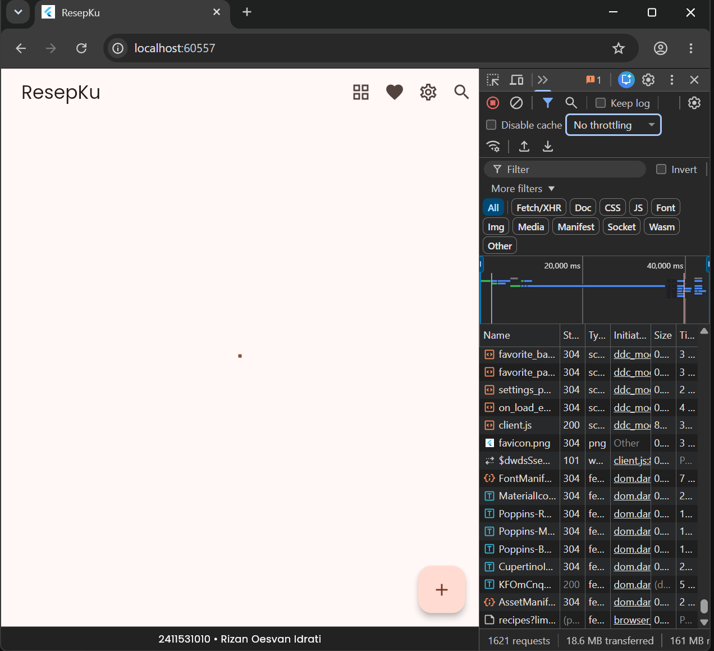
Checkpoint 1: Indikator Loading saat Data DiambilSaat aplikasi pertama kali dibuka, halaman Home menampilkan CircularProgressIndicator di tengah layar selama request ke server berlangsung.
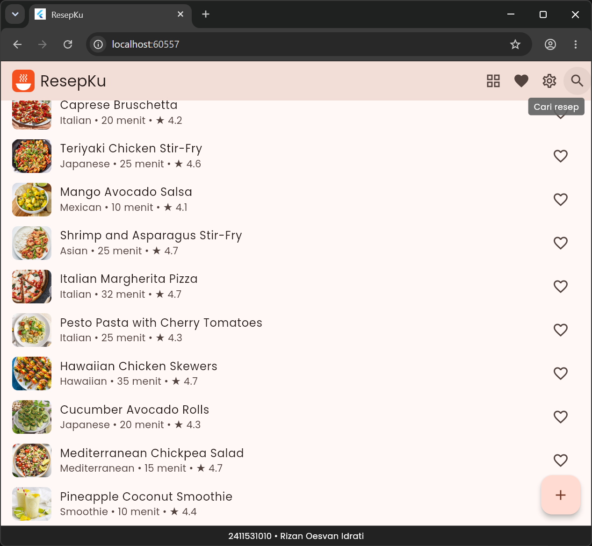
Checkpoint 1: Halaman Home dengan Resep dari ServerSetelah request selesai, halaman Home menampilkan resep yang diambil dari server. Daftar resep kini jauh lebih banyak dan memuat resep yang sebelumnya tidak ada pada data dummy, lengkap dengan thumbnail foto, cuisine, waktu memasak, dan rating.
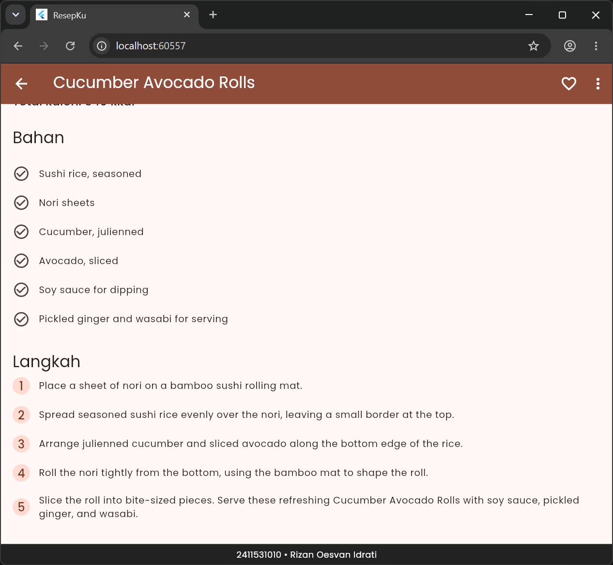
Checkpoint 1: Halaman Detail dengan Bagian LangkahHalaman detail yang di-scroll ke bawah menampilkan bagian Langkah setelah daftar bahan, dengan setiap langkah memasak diberi nomor urut.
B.6 Menguji Error State dan Refresh
Error state diuji dengan memutus koneksi internet melalui mode Offline pada tab Network DevTools, lalu melakukan hot restart. Halaman Home menampilkan ErrorView berisi pesan error dan tombol Coba lagi. Setelah koneksi dikembalikan dan tombol Coba lagi ditekan, daftar resep kembali tampil. Pull-to-refresh diuji dengan menarik daftar ke bawah, sehingga indikator berputar di atas daftar sementara daftar lama tetap terlihat.
Checkpoint 2
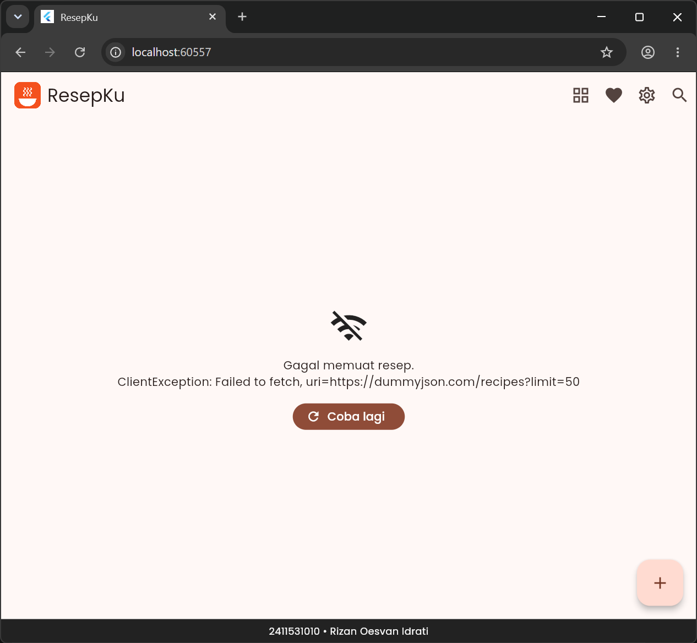
Checkpoint 2: ErrorView saat Koneksi TerputusKetika koneksi terputus, request gagal dan FutureBuilder masuk ke error state, sehingga halaman Home menampilkan ikon wifi_off, pesan bahwa resep gagal dimuat, dan tombol Coba lagi.
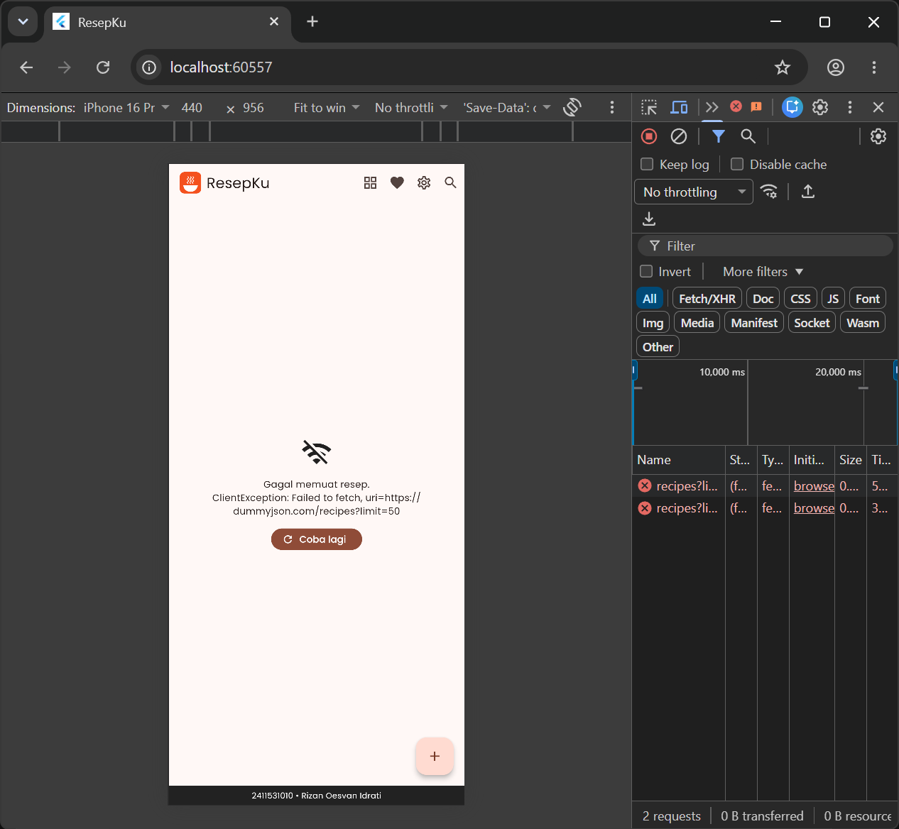
Checkpoint 2: Pull-to-Refresh yang Sedang BerjalanSaat daftar ditarik ke bawah, indikator refresh berputar di bagian atas, sementara daftar resep yang sudah ada tetap ditampilkan hingga data baru selesai diambil.
Bagian C: Mengirim Resep Baru (POST)
C.1 Method addRecipe
/// POST /recipes/add, mengirim resep baru.
/// dummyjson hanya menyimulasikan penyimpanan: server mengembalikan
/// data beserta id baru, tetapi resep tidak benar-benar tersimpan.
Future<Recipe> addRecipe({
required String name,
required String cuisine,
required int cookTimeMinutes,
}) async {
final response = await _client
.post(
Uri.parse('$_baseUrl/recipes/add'),
headers: {'Content-Type': 'application/json'},
body: jsonEncode({
'name': name,
'cuisine': cuisine,
'cookTimeMinutes': cookTimeMinutes,
}),
)
.timeout(_timeout);
_checkStatus(response);
return Recipe.fromJson(jsonDecode(response.body) as Map<String, dynamic>);
}Method addRecipe ditambahkan pada RecipeService untuk mengirim resep baru dengan request POST ke endpoint /recipes/add. Header Content-Type bernilai application/json memberi tahu server bahwa body berisi JSON, sedangkan body disusun dengan jsonEncode yang mengubah Map Dart menjadi teks JSON. Setelah status diperiksa, server mengembalikan resep yang dikirim beserta id baru, lalu diubah menjadi objek Recipe melalui fromJson. Field yang tidak dikirim, seperti difficulty dan rating, diisi dengan nilai bawaan dari fromJson.
C.2 Halaman Form AddRecipePage
import 'package:flutter/material.dart';
import 'package:provider/provider.dart';
import 'package:resepku/services/recipe_service.dart';
class AddRecipePage extends StatefulWidget {
const AddRecipePage({super.key});
@override
State<AddRecipePage> createState() => _AddRecipePageState();
}
class _AddRecipePageState extends State<AddRecipePage> {
final _formKey = GlobalKey<FormState>();
final _nameController = TextEditingController();
final _cuisineController = TextEditingController();
final _minutesController = TextEditingController();
bool _saving = false;
@override
void dispose() {
_nameController.dispose();
_cuisineController.dispose();
_minutesController.dispose();
super.dispose();
}
Future<void> _save() async {
if (!_formKey.currentState!.validate()) return;
setState(() => _saving = true);
final service = context.read<RecipeService>();
try {
final created = await service.addRecipe(
name: _nameController.text.trim(),
cuisine: _cuisineController.text.trim(),
cookTimeMinutes: int.parse(_minutesController.text),
);
// Setelah await, halaman bisa saja sudah ditutup
if (!mounted) return;
Navigator.pop(context, created);
} catch (e) {
if (!mounted) return;
setState(() => _saving = false);
ScaffoldMessenger.of(context).showSnackBar(
SnackBar(content: Text('Gagal menyimpan: $e')),
);
}
}
String? _required(String? value) =>
(value == null || value.trim().isEmpty) ? 'Wajib diisi' : null;AddRecipePage merupakan StatefulWidget yang memiliki GlobalKey<FormState> untuk memanggil validate() pada semua TextFormField sekaligus, tiga TextEditingController untuk nama, cuisine, dan waktu memasak, serta state _saving yang menandai request sedang berjalan. Seluruh controller dibersihkan di dalam dispose() untuk mencegah memory leak. Method _save menjalankan validasi terlebih dahulu, kemudian mengubah _saving menjadi true dan mengambil RecipeService dengan context.read sebelum await, sehingga context tidak digunakan setelah proses menunggu.
Setelah addRecipe selesai, pengecekan mounted memastikan halaman masih terbuka sebelum Navigator.pop menutup form sambil mengembalikan resep hasil POST ke HomePage. Apabila request gagal, _saving dikembalikan menjadi false dan SnackBar berisi pesan error ditampilkan. Fungsi _required digunakan sebagai validator yang mengembalikan pesan Wajib diisi apabila isian kosong.
@override
Widget build(BuildContext context) {
return Scaffold(
appBar: AppBar(title: const Text('Tambah Resep')),
body: Form(
key: _formKey,
child: ListView(
padding: const EdgeInsets.all(16),
children: [
TextFormField(
controller: _nameController,
decoration: const InputDecoration(labelText: 'Nama resep'),
validator: _required,
),
const SizedBox(height: 12),
TextFormField(
controller: _cuisineController,
decoration: const InputDecoration(labelText: 'Cuisine, misalnya Indonesian'),
validator: _required,
),
const SizedBox(height: 12),
TextFormField(
controller: _minutesController,
decoration: const InputDecoration(labelText: 'Waktu memasak (menit)'),
keyboardType: TextInputType.number,
validator: (value) {
final minutes = int.tryParse(value ?? '');
if (minutes == null || minutes <= 0) return 'Isi dengan angka lebih dari 0';
return null;
},
),
const SizedBox(height: 24),
FilledButton(
onPressed: _saving ? null : _save,
child: _saving
? const SizedBox(
width: 20,
height: 20,
child: CircularProgressIndicator(strokeWidth: 2),
)
: const Text('Simpan'),
),
],
),
),
);
}
}Form berisi tiga TextFormField di dalam ListView. Kolom nama dan cuisine memakai validator _required, sedangkan kolom waktu memasak menggunakan keyboard angka dan validator yang memastikan isinya berupa angka lebih dari nol. Selama _saving bernilai true, tombol Simpan dinonaktifkan dan menampilkan indikator loading kecil, sehingga resep tidak terkirim dua kali apabila tombol ditekan berulang.
C.3 Tombol Tambah di HomePage
import 'package:resepku/pages/add_recipe_page.dart'; Future<void> _openAddPage() async {
final created = await Navigator.push<Recipe>(
context,
MaterialPageRoute(builder: (context) => const AddRecipePage()),
);
if (created == null || !mounted) return;
ScaffoldMessenger.of(context).showSnackBar(
SnackBar(
content: Text(
'"${created.name}" diterima server dengan id ${created.id}. '
'dummyjson hanya menyimulasikan penyimpanan.',
),
),
);
} floatingActionButton: FloatingActionButton(
tooltip: 'Tambah resep',
onPressed: _openAddPage,
child: const Icon(Icons.add),
),Method _openAddPage membuka AddRecipePage menggunakan Navigator.push dengan tipe Recipe, lalu menunggu nilai yang dikembalikan ketika form ditutup. Apabila pengguna menutup form tanpa menyimpan, nilainya null dan method langsung berhenti. Jika resep berhasil dikirim, SnackBar menampilkan nama resep beserta id yang diberikan server. Method ini dipanggil oleh FloatingActionButton bertanda tambah yang ditambahkan pada Scaffold HomePage.
C.4 Mencoba POST
Form diuji dengan menekan Simpan saat seluruh kolom masih kosong, sehingga pesan Wajib diisi muncul dan tidak ada request yang dikirim. Selanjutnya form diisi dengan nama Rendang, cuisine Indonesian, dan waktu 180 menit, lalu disimpan. Form tertutup dan SnackBar menampilkan id dari server. Ketika daftar di-refresh, Rendang tidak muncul di daftar resep karena server hanya menyimulasikan penyimpanan.
Checkpoint 3
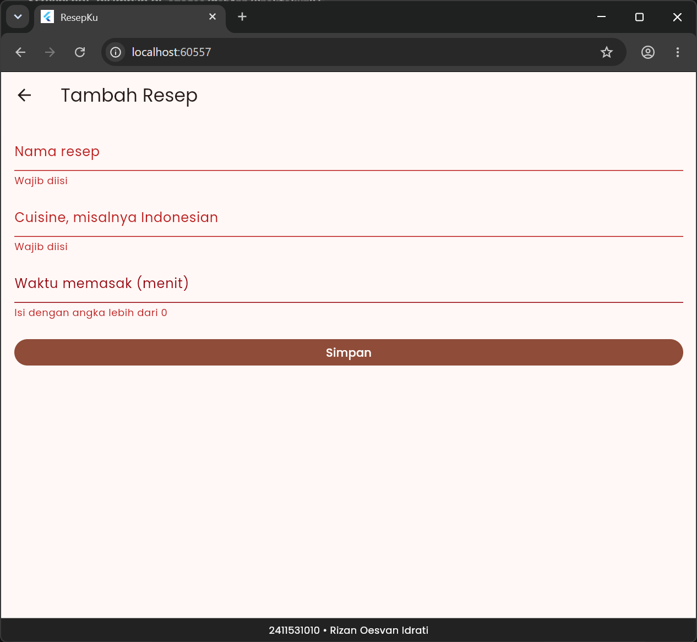
Checkpoint 3: Form Tambah Resep dengan Pesan ValidasiKetika tombol Simpan ditekan dengan form kosong, pesan Wajib diisi muncul di bawah kolom nama dan cuisine, serta pesan agar waktu memasak diisi angka lebih dari 0 muncul di bawah kolom waktu.
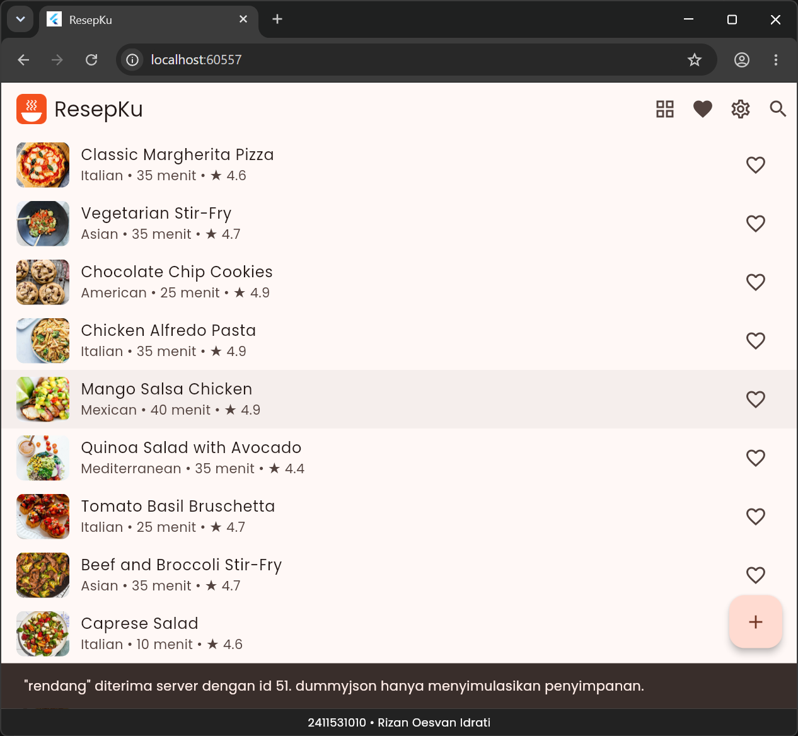
Checkpoint 3: SnackBar Berisi Id dari ServerSetelah resep Rendang berhasil dikirim, form tertutup dan halaman Home menampilkan SnackBar berisi nama resep beserta id yang diberikan oleh server.
Bagian D: Pengujian
D.1 Menguji Aplikasi
| No | Skenario | Hasil yang Diharapkan | Sesuai? |
|---|---|---|---|
| 1 | Buka aplikasi | Indikator loading, lalu 50 resep dari server | ✓ |
| 2 | Tandai dua resep sebagai favorit, lalu tarik untuk refresh | Ikon hati kedua resep tetap merah dan badge tetap 2 | ✓ |
| 3 | Tekan tombol grid, lalu kembali ke list | Tidak ada indikator loading baru | ✓ |
| 4 | Buka detail salah satu resep | Foto, porsi, bahan, dan langkah memasak tampil | ✓ |
| 5 | Putuskan koneksi (mode Offline), lalu hot restart | ErrorView dengan tombol "Coba lagi" | ✓ |
| 6 | Sambungkan kembali koneksi, tekan "Coba lagi" | Daftar resep tampil kembali | ✓ |
| 7 | Kirim resep baru melalui tombol + | SnackBar berisi id dari server | ✓ |
Ketujuh skenario memberikan hasil sesuai dengan yang diharapkan. Fitur favorit, pergantian tampilan list dan grid, serta halaman detail tetap berjalan dengan data dari server, sedangkan error state, tombol Coba lagi, dan pengiriman resep baru juga berfungsi dengan benar.
3. Pertanyaan Analisis
1. Mengapa status favorit tetap benar setelah refresh? Setiap refresh membuat objek Recipe yang baru dari JSON, sehingga objek resep setelah refresh berbeda dengan objek yang sebelumnya disimpan di FavoriteProvider. Namun, FavoriteProvider tidak membandingkan resep berdasarkan objeknya, melainkan berdasarkan id melalui _items.any((r) => r.id == recipe.id). Karena resep yang sama dari server selalu memiliki id yang sama, isFavorite tetap bernilai true dan ikon hati tetap merah. Apabila resep dibandingkan sebagai objek, kedua objek akan dianggap berbeda dan status favorit akan hilang setiap kali daftar dimuat ulang.
2. Mengapa tombol grid tidak memunculkan indikator loading? Future disimpan di _recipesFuture dan hanya dibuat sekali di initState. Ketika tombol grid ditekan, setState menjalankan build ulang, tetapi FutureBuilder menerima objek Future yang sama dan sudah selesai, sehingga langsung menampilkan data tanpa mengirim request baru. Apabila future ditulis langsung di dalam build(), setiap build akan membuat Future baru. Akibatnya request ke server terkirim ulang setiap kali tombol grid ditekan, FutureBuilder kembali ke kondisi waiting tanpa data sehingga indikator loading muncul lagi, dan kuota maupun beban server terbuang untuk data yang sebenarnya sudah dimiliki.
3. Keuntungan memanggil API melalui RecipeService. Keuntungan pertama adalah pemisahan tanggung jawab. URL, header, timeout, pengecekan status, dan proses decode JSON berada di satu tempat, sehingga widget cukup memanggil method seperti fetchRecipes tanpa mengetahui detail HTTP, dan perubahan pada API cukup dilakukan di RecipeService tanpa mengubah halaman yang memakainya. Keuntungan kedua adalah kemudahan pengujian. Karena http.Client dapat diberikan dari luar melalui constructor, RecipeService dapat diuji menggunakan MockClient yang mengembalikan respons palsu, sehingga pengujian dapat dilakukan tanpa koneksi internet dan hasilnya tidak bergantung pada kondisi server.
4. Mengapa resep hasil POST tidak muncul saat daftar dimuat ulang? Server dummyjson hanya menyimulasikan penyimpanan. Request POST dijawab dengan data yang dikirim beserta id baru seolah-olah resep tersimpan, tetapi resep tersebut tidak benar-benar ditambahkan ke database, karena server dipakai bersama oleh banyak orang. Akibatnya request GET berikutnya tetap mengembalikan 50 resep yang sama. Pada server sungguhan, data yang dikirim benar-benar disimpan, sehingga aplikasi biasanya memuat ulang daftar setelah POST berhasil, atau langsung menambahkan objek resep yang dikembalikan server ke daftar yang sedang tampil agar pengguna dapat melihat resep baru tanpa menunggu request berikutnya.
5. Skenario yang dicegah oleh if (!mounted) return; Baris tersebut mencegah kesalahan ketika halaman sudah ditutup sebelum request selesai. Misalnya, pengguna menekan Simpan, lalu karena server lambat, pengguna menekan tombol kembali sebelum respons diterima. AddRecipePage pun dibuang dari tumpukan dan State-nya di-dispose. Ketika await selesai, kode setelahnya tetap berjalan dan akan memanggil Navigator.pop, setState, atau ScaffoldMessenger.of(context) dengan context yang sudah tidak aktif, sehingga terjadi error seperti setState() called after dispose(). Pengecekan mounted menghentikan proses tersebut apabila halaman sudah tidak ada.
4. Latihan
Latihan 1: Pencarian Resep
A. Method searchRecipes pada RecipeService
Future<List<Recipe>> searchRecipes(String query) async {
final uri = Uri.parse('$_baseUrl/recipes/search')
.replace(queryParameters: {'q': query});
final response = await _client.get(uri).timeout(_timeout);
_checkStatus(response);
final body = jsonDecode(response.body) as Map<String, dynamic>;
final list = body['recipes'] as List<dynamic>;
return list
.map((item) => Recipe.fromJson(item as Map<String, dynamic>))
.toList();
}Method searchRecipes mengirim request GET ke endpoint /recipes/search dengan parameter q berisi kata kunci. URL disusun menggunakan Uri.parse(...).replace(queryParameters: ...) agar spasi dan karakter khusus pada kata kunci di-encode dengan benar, misalnya kata kunci chicken pasta menjadi chicken%20pasta. Respons diproses dengan cara yang sama seperti fetchRecipes, yaitu memeriksa status, mengambil key recipes, lalu mengubah setiap elemennya menjadi Recipe.
B. Halaman SearchPage
import 'package:flutter/material.dart';
import 'package:provider/provider.dart';
import 'package:resepku/models/recipe.dart';
import 'package:resepku/services/recipe_service.dart';
import 'package:resepku/widgets/error_view.dart';
import 'package:resepku/widgets/recipe_tile.dart';
class SearchPage extends StatefulWidget {
const SearchPage({super.key});
@override
State<SearchPage> createState() => _SearchPageState();
}
class _SearchPageState extends State<SearchPage> {
final _searchController = TextEditingController();
Future<List<Recipe>>? _searchFuture;
String _query = '';
@override
void dispose() {
_searchController.dispose();
super.dispose();
}
void _search(String value) {
final query = value.trim();
if (query.isEmpty) return;
setState(() {
_query = query;
_searchFuture = context.read<RecipeService>().searchRecipes(query);
});
}
@override
Widget build(BuildContext context) {
return Scaffold(
appBar: AppBar(
title: TextField(
controller: _searchController,
autofocus: true,
textInputAction: TextInputAction.search,
decoration: const InputDecoration(
hintText: 'Cari resep...',
border: InputBorder.none,
),
onSubmitted: _search,
),
actions: [
IconButton(
tooltip: 'Cari',
icon: const Icon(Icons.search),
onPressed: () => _search(_searchController.text),
),
],
),
body: _buildBody(),
);
}
Widget _buildBody() {
if (_searchFuture == null) {
return const Center(
child: Text('Ketik nama resep, lalu tekan Enter.'),
);
}
return FutureBuilder<List<Recipe>>(
future: _searchFuture,
builder: (context, snapshot) {
if (snapshot.connectionState == ConnectionState.waiting) {
return const Center(child: CircularProgressIndicator());
}
if (snapshot.hasError) {
return ErrorView(
message: 'Gagal mencari resep.\n${snapshot.error}',
onRetry: () => _search(_query),
);
}
final recipes = snapshot.data ?? [];
if (recipes.isEmpty) {
return Center(
child: Padding(
padding: const EdgeInsets.all(24),
child: Text(
'Tidak ada resep yang cocok dengan "$_query".',
textAlign: TextAlign.center,
),
),
);
}
return ListView.builder(
itemCount: recipes.length,
itemBuilder: (context, index) => RecipeTile(recipe: recipes[index]),
);
},
);
}
}SearchPage merupakan StatefulWidget dengan TextField di posisi title AppBar. TextField diberi autofocus agar keyboard langsung muncul, dan textInputAction.search agar tombol Enter pada keyboard berfungsi sebagai tombol cari. Future hasil pencarian disimpan pada field _searchFuture bertipe Future<List<Recipe>>? yang bernilai null sebelum pengguna mencari, sehingga halaman awalnya hanya menampilkan petunjuk. Ketika Enter ditekan, onSubmitted memanggil _search yang membuat Future baru di dalam setState, sekaligus menyimpan kata kunci pada _query.
Hasil pencarian ditampilkan dengan FutureBuilder yang menangani tiga kondisi. Selama request berjalan ditampilkan indikator loading, ketika request gagal ditampilkan ErrorView yang dapat mengulang pencarian dengan kata kunci yang sama, dan ketika berhasil ditampilkan daftar resep menggunakan RecipeTile. Apabila server tidak menemukan resep yang cocok, halaman menampilkan pesan khusus yang menyebutkan kata kunci yang dicari.
C. Tombol Pencarian di HomePage
import 'package:resepku/pages/search_page.dart'; IconButton(
tooltip: 'Cari resep',
icon: const Icon(Icons.search),
onPressed: () => Navigator.push(
context,
MaterialPageRoute(builder: (context) => const SearchPage()),
),
),IconButton dengan ikon kaca pembesar ditambahkan sebagai item pertama pada actions AppBar HomePage. Ketika ditekan, tombol ini membuka SearchPage menggunakan Navigator.push.
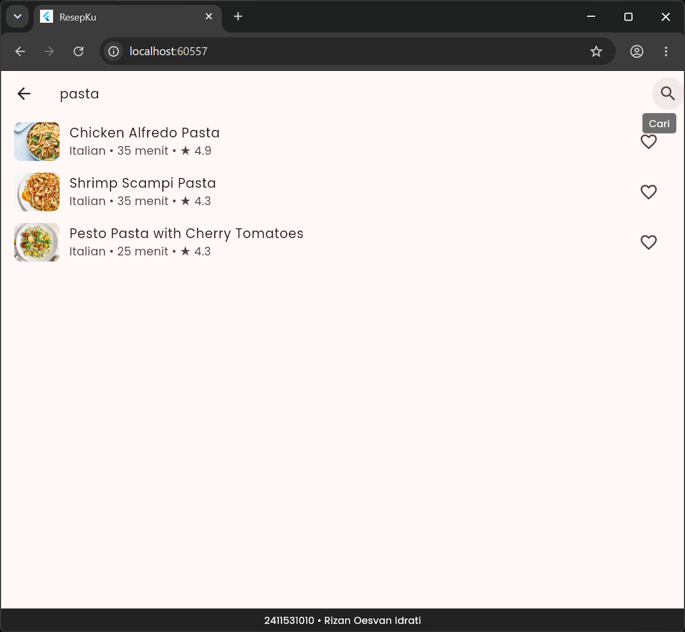
Hasil Tampilan: Hasil Pencarian ResepSetelah kata kunci pasta diketik dan Enter ditekan, halaman pencarian menampilkan resep-resep yang namanya mengandung kata tersebut dalam bentuk daftar yang sama dengan halaman Home.
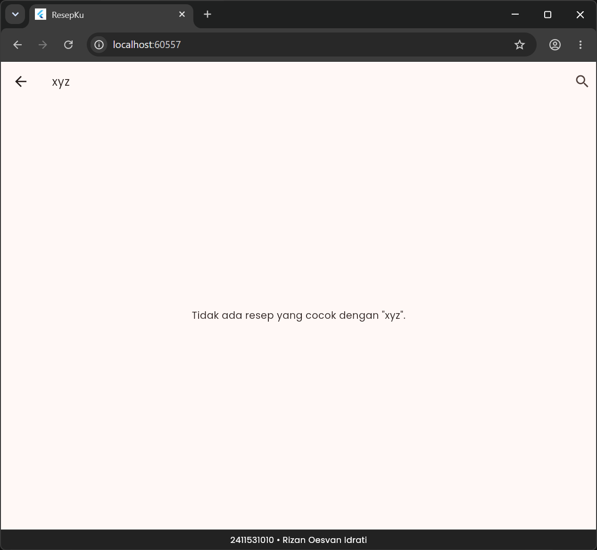
Hasil Tampilan: Hasil Pencarian KosongKetika kata kunci tidak cocok dengan resep mana pun, halaman menampilkan pesan bahwa tidak ada resep yang cocok beserta kata kunci yang dicari.
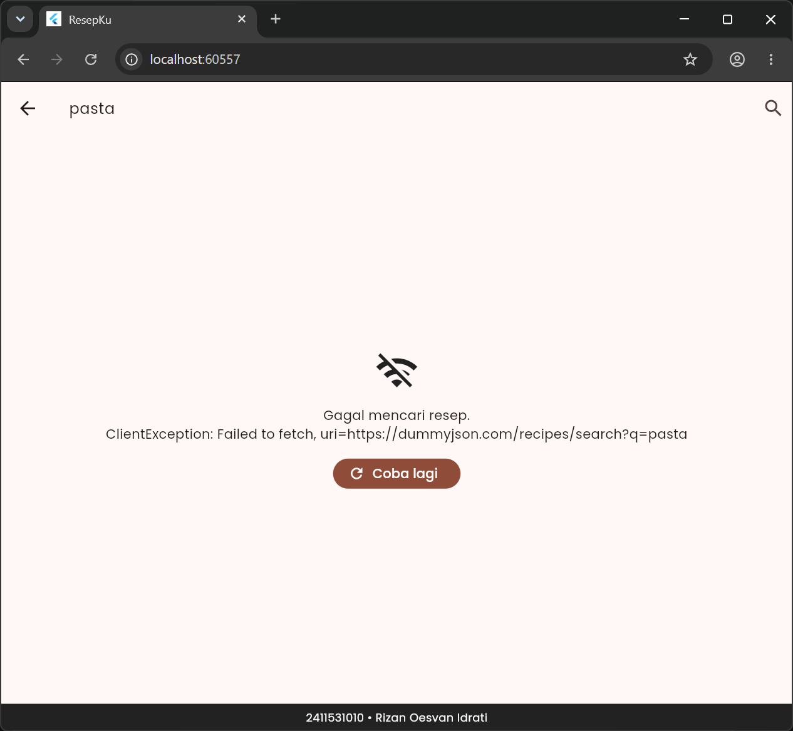
Hasil Tampilan: Pencarian saat Koneksi TerputusApabila pencarian dilakukan ketika koneksi terputus, halaman menampilkan ErrorView dengan tombol Coba lagi untuk mengulang pencarian dengan kata kunci yang sama.
Latihan 2: Mengubah dan Menghapus Resep
A. Method updateRecipe dan deleteRecipe
Future<Recipe> updateRecipe(int id, {required String name}) async {
final response = await _client
.put(
Uri.parse('$_baseUrl/recipes/$id'),
headers: {'Content-Type': 'application/json'},
body: jsonEncode({'name': name}),
)
.timeout(_timeout);
_checkStatus(response);
return Recipe.fromJson(jsonDecode(response.body) as Map<String, dynamic>);
}
Future<bool> deleteRecipe(int id) async {
final response = await _client
.delete(Uri.parse('$_baseUrl/recipes/$id'))
.timeout(_timeout);
_checkStatus(response);
final body = jsonDecode(response.body) as Map<String, dynamic>;
return body['isDeleted'] == true;
}Method updateRecipe mengirim request PUT ke /recipes/{id} dengan body JSON berisi nama baru, lalu mengubah respons server menjadi objek Recipe. Method deleteRecipe mengirim request DELETE ke alamat yang sama dan mengembalikan nilai isDeleted dari respons, yang bernilai true apabila server menyatakan resep berhasil dihapus. Kedua method tetap melewati _checkStatus dan batas waktu yang sama seperti method lain di RecipeService.
B. Menu Ubah dan Hapus di Halaman Detail
import 'package:resepku/services/recipe_service.dart'; Future<void> _editName() async {
var input = widget.recipe.name;
final newName = await showDialog<String>(
context: context,
builder: (dialogContext) => AlertDialog(
title: const Text('Ubah nama resep'),
content: TextFormField(
initialValue: input,
autofocus: true,
decoration: const InputDecoration(labelText: 'Nama resep'),
onChanged: (value) => input = value,
),
actions: [
TextButton(
onPressed: () => Navigator.pop(dialogContext),
child: const Text('Batal'),
),
FilledButton(
onPressed: () => Navigator.pop(dialogContext, input.trim()),
child: const Text('Simpan'),
),
],
),
);
if (newName == null || newName.isEmpty || !mounted) return;
final service = context.read<RecipeService>();
try {
final updated = await service.updateRecipe(widget.recipe.id, name: newName);
if (!mounted) return;
ScaffoldMessenger.of(context).showSnackBar(
SnackBar(content: Text('Nama resep diubah menjadi "${updated.name}"')),
);
} catch (e) {
if (!mounted) return;
ScaffoldMessenger.of(context).showSnackBar(
SnackBar(content: Text('Gagal mengubah resep: $e')),
);
}
}Method _editName menampilkan AlertDialog berisi TextFormField yang sudah terisi nama resep saat ini. Isian disimpan pada variabel input melalui onChanged, lalu dikembalikan ketika tombol Simpan ditekan, atau dikembalikan null ketika Batal ditekan. Apabila nama baru kosong, dialog dibatalkan, atau halaman sudah ditutup, proses dihentikan. Jika tidak, request PUT dikirim melalui updateRecipe, dan nama dari respons server ditampilkan pada SnackBar. Nama pada halaman detail tidak ikut berubah karena widget.recipe tidak diganti dan server hanya menyimulasikan perubahan.
Future<void> _deleteRecipe() async {
final confirmed = await showDialog<bool>(
context: context,
builder: (dialogContext) => AlertDialog(
title: const Text('Hapus resep?'),
content: Text('Resep "${widget.recipe.name}" akan dihapus.'),
actions: [
TextButton(
onPressed: () => Navigator.pop(dialogContext, false),
child: const Text('Batal'),
),
TextButton(
onPressed: () => Navigator.pop(dialogContext, true),
child: const Text('Hapus'),
),
],
),
);
if (confirmed != true || !mounted) return;
final service = context.read<RecipeService>();
try {
final deleted = await service.deleteRecipe(widget.recipe.id);
if (!mounted) return;
if (deleted) {
ScaffoldMessenger.of(context).showSnackBar(
SnackBar(content: Text('Resep "${widget.recipe.name}" berhasil dihapus')),
);
Navigator.pop(context);
} else {
ScaffoldMessenger.of(context).showSnackBar(
const SnackBar(content: Text('Resep tidak terhapus')),
);
}
} catch (e) {
if (!mounted) return;
ScaffoldMessenger.of(context).showSnackBar(
SnackBar(content: Text('Gagal menghapus resep: $e')),
);
}
}Method _deleteRecipe menampilkan dialog konfirmasi terlebih dahulu, dan request DELETE hanya dikirim apabila pengguna memilih Hapus. Jika respons berisi isDeleted bernilai true, SnackBar ditampilkan lalu halaman detail ditutup dengan Navigator.pop. SnackBar tetap terlihat di halaman Home karena ScaffoldMessenger berada di tingkat MaterialApp. Pada kedua method, pengecekan mounted dilakukan setelah setiap await, dan RecipeService diambil sebelum request dikirim agar context tidak digunakan setelah proses menunggu.
PopupMenuButton<String>(
onSelected: (value) {
if (value == 'edit') _editName();
if (value == 'delete') _deleteRecipe();
},
itemBuilder: (context) => const [
PopupMenuItem(
value: 'edit',
child: ListTile(
leading: Icon(Icons.edit),
title: Text('Ubah nama'),
contentPadding: EdgeInsets.zero,
),
),
PopupMenuItem(
value: 'delete',
child: ListTile(
leading: Icon(Icons.delete_outline),
title: Text('Hapus resep'),
contentPadding: EdgeInsets.zero,
),
),
],
),PopupMenuButton diletakkan pada actions SliverAppBar setelah tombol favorit, sehingga muncul sebagai ikon titik tiga. Menu berisi dua PopupMenuItem dengan nilai edit dan delete, masing-masing ditampilkan dengan ikon dan teks. Ketika salah satu menu dipilih, onSelected memanggil _editName atau _deleteRecipe sesuai nilai yang dipilih.
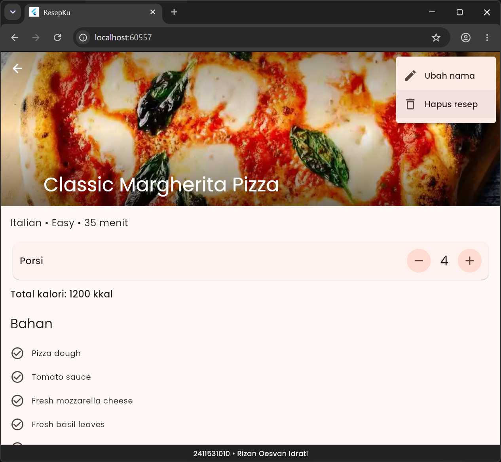
Hasil Tampilan: Menu Ubah dan Hapus pada Halaman DetailKetika ikon titik tiga pada halaman detail ditekan, muncul menu berisi pilihan Ubah nama dan Hapus resep.
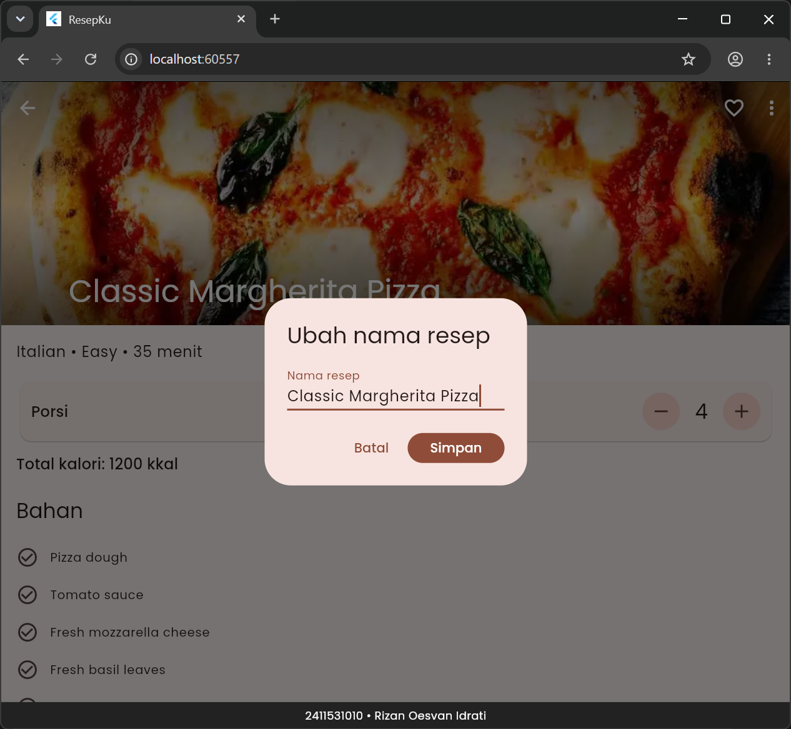
Hasil Tampilan: Dialog Ubah Nama ResepMemilih Ubah nama menampilkan dialog berisi kolom nama resep yang sudah terisi nama saat ini dan dapat diganti dengan nama baru.
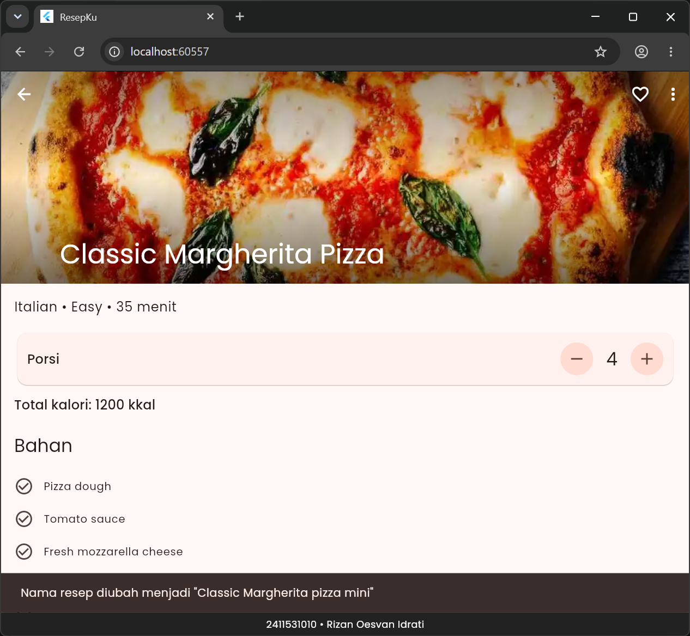
Hasil Tampilan: SnackBar Hasil Request PUTSetelah tombol Simpan ditekan, SnackBar menampilkan nama baru yang dikembalikan oleh server sebagai tanda bahwa request PUT berhasil.
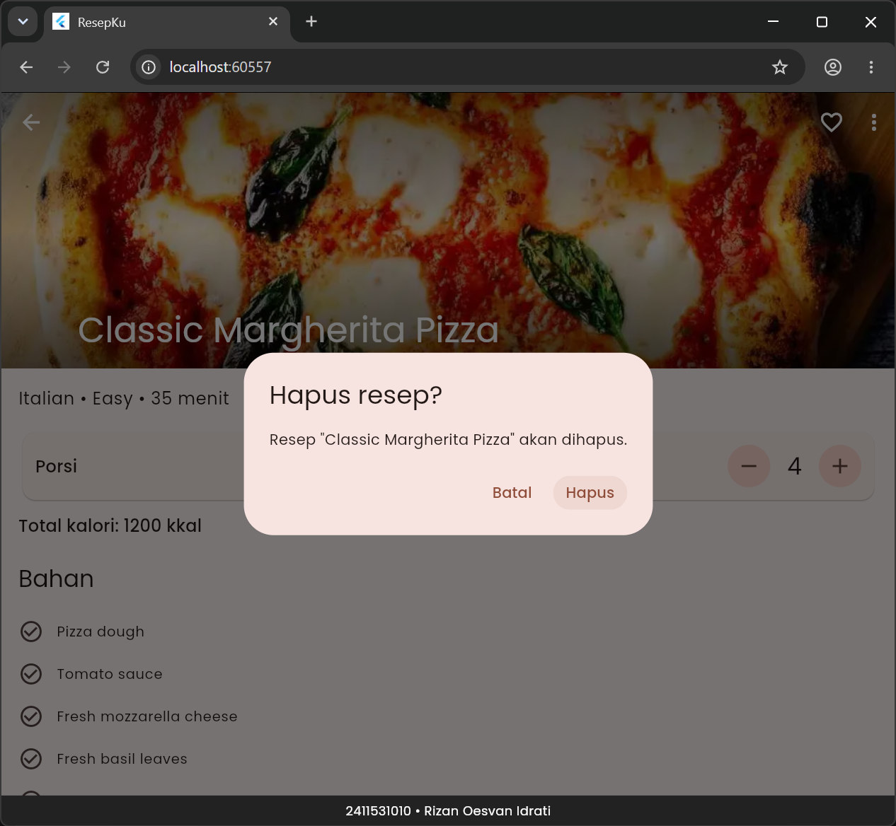
Hasil Tampilan: Dialog Konfirmasi Hapus ResepMemilih Hapus resep menampilkan dialog konfirmasi yang menyebutkan nama resep yang akan dihapus.
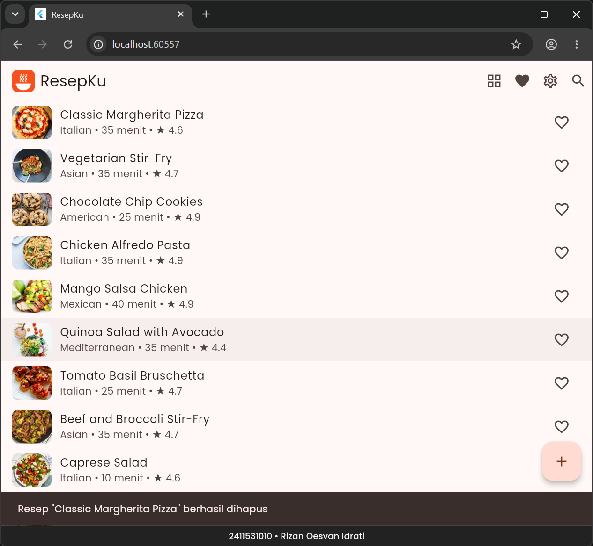
Hasil Tampilan: SnackBar Setelah Resep DihapusSetelah penghapusan dikonfirmasi dan server mengembalikan isDeleted bernilai true, halaman detail tertutup dan halaman Home menampilkan SnackBar bahwa resep berhasil dihapus.
Latihan 3 (Bonus): Unit Test tanpa Internet
A. Pengujian Recipe dan RecipeService
import 'dart:convert';
import 'package:flutter_test/flutter_test.dart';
import 'package:http/http.dart' as http;
import 'package:http/testing.dart';
import 'package:resepku/models/recipe.dart';
import 'package:resepku/services/recipe_service.dart';
void main() {
group('Recipe.fromJson', () {
test('membaca rating 5 (int) sebagai 5.0 (double)', () {
final recipe = Recipe.fromJson({'id': 1, 'name': 'Tes', 'rating': 5});
expect(recipe.rating, isA<double>());
expect(recipe.rating, 5.0);
});
test('memberi nilai bawaan untuk field yang tidak ada', () {
final recipe = Recipe.fromJson({'id': 2, 'name': 'Rendang'});
expect(recipe.cuisine, '-');
expect(recipe.difficulty, '-');
expect(recipe.prepTimeMinutes, 0);
expect(recipe.cookTimeMinutes, 0);
expect(recipe.servings, 1);
expect(recipe.caloriesPerServing, 0);
expect(recipe.rating, 0.0);
expect(recipe.image, '');
expect(recipe.ingredients, isEmpty);
expect(recipe.instructions, isEmpty);
});
});
group('RecipeService.fetchRecipes', () {
test('mengembalikan List<Recipe> dari respons palsu', () async {
final client = MockClient((request) async {
return http.Response(
jsonEncode({
'recipes': [
{'id': 1, 'name': 'Classic Margherita Pizza', 'rating': 4.6},
{'id': 2, 'name': 'Rendang', 'rating': 5},
],
'total': 2,
'skip': 0,
'limit': 2,
}),
200,
);
});
final service = RecipeService(client: client);
final recipes = await service.fetchRecipes();
expect(recipes, isA<List<Recipe>>());
expect(recipes, hasLength(2));
expect(recipes.first.name, 'Classic Margherita Pizza');
expect(recipes.last.rating, 5.0);
});
test('melempar RecipeServiceException jika status 404', () async {
final client = MockClient((request) async {
return http.Response('Not Found', 404);
});
final service = RecipeService(client: client);
await expectLater(
service.fetchRecipes(),
throwsA(isA<RecipeServiceException>()),
);
});
});
}File pengujian dibagi menjadi dua group. Group pertama menguji Recipe.fromJson, yaitu memastikan rating bernilai 5 dalam bentuk int terbaca sebagai double 5.0, serta memastikan setiap field yang tidak ada pada JSON mendapatkan nilai bawaan. Group kedua menguji RecipeService dengan MockClient dari package:http/testing.dart sebagai pengganti client asli. MockClient menerima fungsi yang menentukan respons palsu untuk setiap request, sehingga pengujian tidak membutuhkan koneksi internet. Pengujian pertama memastikan fetchRecipes mengubah respons berstatus 200 menjadi List<Recipe> dengan isi yang benar, sedangkan pengujian kedua memastikan respons berstatus 404 menghasilkan RecipeServiceException yang diperiksa menggunakan expectLater dan throwsA.
flutter test test/recipe_service_test.dart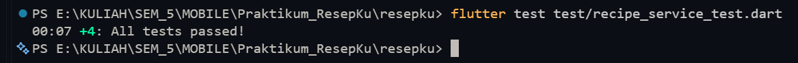
Hasil Tampilan: Output flutter testOutput terminal menunjukkan bahwa keempat pengujian berhasil dijalankan dan diakhiri dengan pesan All tests passed, yang menandakan bahwa fromJson dan RecipeService bekerja sesuai yang diharapkan tanpa bergantung pada server.
5. Kesimpulan
Berdasarkan praktikum yang telah dilakukan, dapat disimpulkan bahwa integrasi REST API memungkinkan aplikasi menampilkan data yang lebih banyak dan dapat berubah tanpa perlu mengubah kode. Data JSON dari server perlu diubah menjadi objek Dart melalui factory fromJson yang menangani perbedaan tipe data dan field yang tidak selalu ada, agar aplikasi tidak crash. Pengumpulan seluruh request GET, POST, PUT, dan DELETE di dalam RecipeService membuat widget lebih sederhana, memudahkan perubahan, dan memungkinkan pengujian tanpa internet menggunakan MockClient. FutureBuilder menyediakan cara yang jelas untuk menangani loading state, error state, dan data state, dengan syarat Future dibuat sekali di initState agar request tidak terkirim ulang setiap kali halaman di-build. Penanganan error melalui timeout, pengecekan status code, tombol Coba lagi, serta pengecekan mounted setelah setiap await membuat aplikasi tetap stabil ketika koneksi lambat, terputus, atau ketika pengguna menutup halaman sebelum request selesai.